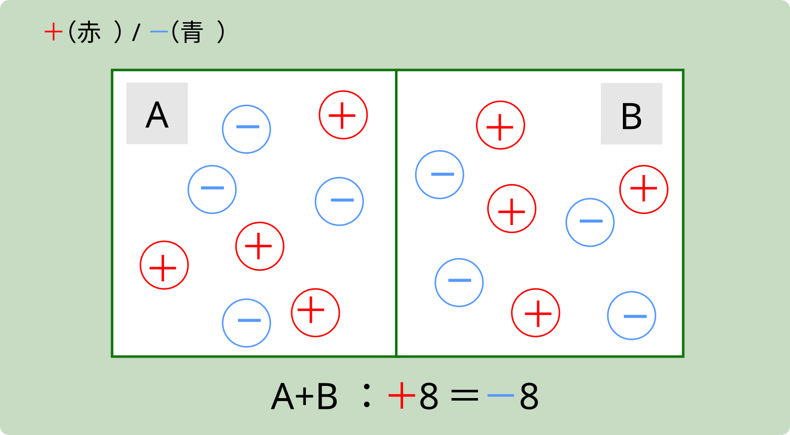
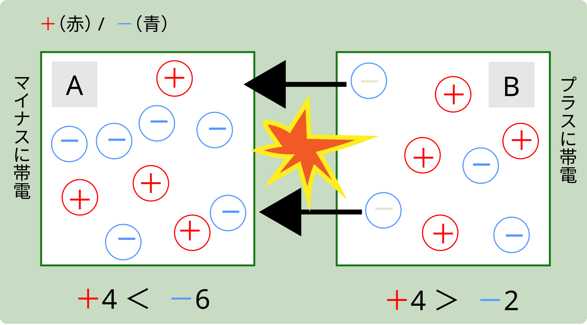
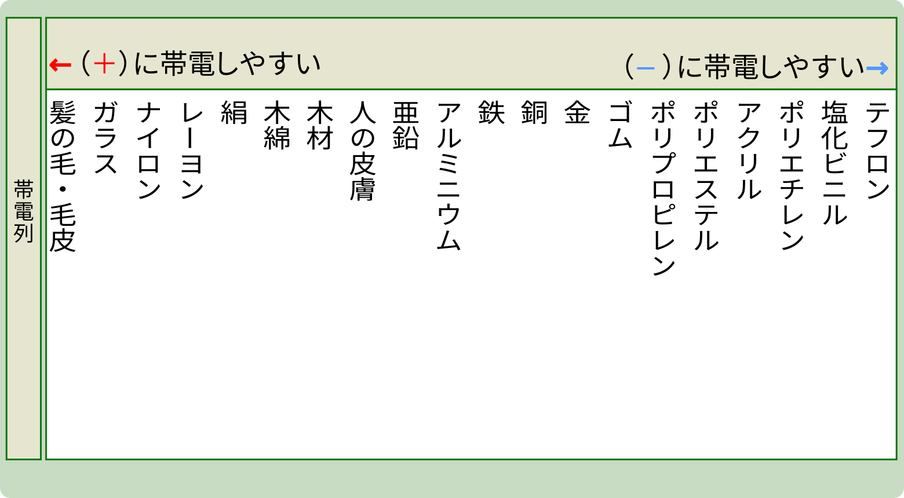

静電気の発生
電解液に電極を入れて電流を流すと、 各電極で電子の授受が行われ、 酸化還元反応が起こる。 これを電気分解という。電気分解は、「電気エネルギーを使って
電子を受け取った側は負に帯電し、電子を失った側は正に帯電します。 この電荷の偏りが静電気の正体です。なお、状況によっては帯電粒子（イオンや微粒子）の移動でも帯電が生じます。
物体どうしで電荷が移動しても、相互作用の前後で系全体の電気量（電荷の総和）は変化しません。 これを電気量（電荷）保存の法則といいます。
修正中
ひっかけ注意
- 「正に帯電」＝“プラスの電気をもらった”ではない。電子を失って相対的に正が多くなった状態だよ。
帯電とは電荷の偏りです。電子の移動が起きても、相互作用の前後で 系全体の電気量（正−負の総和）は変化しません。これを 電気量（電荷）保存の法則といいます。

ひっかけ注意
- 「正に帯電」＝電子を失った状態。プラスの電気をもらったではありません。

ひっかけ注意
- 「正に帯電」＝電子を失った状態。プラスの電気を“もらう”わけではない。
- 帯電は相手との組合せで変わる相対概念（帯電列の順を固定の“絶対順位”と誤解しない）。
確認ポイント
- 電荷には正と負があり、電子は負電荷、陽子は正電荷をもつ。
- 同極は反発、異極は引力で作用する。これを静電力（クーロン力）という。
- 物体や原子などがもつ電気的性質を電荷、その量を電気量という。
- 電気量の単位はクーロン（C）。参考：素電荷
e ≈ 1.60×10−19 C。 - 静電気は絶縁性が高く乾燥した環境ほど逃げ道が少なく、蓄積しやすい。
- 固体・液体・気体のいずれも帯電する（液体・気体は漏えいしやすく残りにくい）。
- 代表的な測定：箔検電器、表面電位計（電界計）、ファラデーケージ（筒）＋クーロンメータ、エレクトロメータ等。
電気素量
電気素量（elementary charge）とは、電荷の最小単位です。
電子がもつ電荷は −e、陽子は ＋e で、
その大きさは等しく
e ≈ 1.602×10−19 C です。
すべての電気量 Q は、この最小単位の整数倍で表されます：
Q = n·e（n は整数）。
ひっかけ注意
- 10−19 を 1019 と書き間違えない（桁が大違い）。
- 電子は−e、陽子は＋e。大きさは同じで符号だけが逆。
箔検（はくけん）電器
帯電の有無を調べる代表的な器具です。金属の集電板と導体棒の先に、軽い 金属箔（2枚）が吊られています（容器はガラスなどの絶縁体）。
- ① 静電誘導： 帯電体を集電板に近づけると、導体内で電荷が移動し、 箔には同符号の電荷が集まります。
- ② 反発で開く： 同符号どうしが斥力で反発し、2枚の箔が左右に開きます。
- ③ 接触でより大きく： 帯電体を直接触れると電荷が移り、開きがさらに大きくなります。
開きの有無や大きさで帯電の有無・強さを確認します（極性の判定は基準電荷と比較して行います）。
ひっかけ注意
- 箔が開く原因は同符号どうしの反発（斥力）。「異符号で引き合う」が混ざりやすい。
- 「近づける（誘導）」でも開く。接触だけで開くと覚えない。
- 容器は絶縁体で支持（漏えいすると開きが小さくなる）。
帯電列（たいでんれつ）
帯電列とは、2種類の材質を摩擦したり接触分離したとき、プラス側に帯電しやすい材質を上位に、
マイナス側に帯電しやすいものを下位に並べた序列の表です。
摩擦する材質が帯電列上でより離れていれば、より多くの電荷が移動します。

確認ポイント
- ガラス棒とナイロンを摩擦➡️ガラス棒は（＋）、ナイロンは（−）に帯電。
- アクリル棒とナイロンを摩擦➡️ナイロンは（＋）、アクリル棒は（➖）に帯電。
- 毛皮と塩化ビニル管を摩擦➡️毛皮（＋）、塩化ビニル管は（−）に帯電。
-
「ガラス棒×ナイロン」と「ガラス棒×木綿」を摩擦した時を比較すると、
序列により開きのある「ガラス棒と木綿」の方が静電気はより多く発生する。
導電率 σ（シグマ）
導電率（電気伝導率）は、物質の電気の流れやすさを表す量です。 値が大きいほど電気を通しやすく、抵抗は小さくなります。
導電率は抵抗率（流れにくさ）ρの逆数で、 σ = 1 / ρ。単位は S/m（ジーメンス毎メートル）。
形状に依存する実際の通しやすさ（コンダクタンス）は G = σ·A/L（A：断面積、L：長さ）。抵抗は R = ρ·L/A。 つまり 「材質（σ）×形状」で決まります。
液体（電解質）では塩分や酸の濃さの指標として用います。 例：食塩水は濃いほど σ↑（※通常は 25℃ への温度換算で管理）。

σ = 1 / ρ
確認ポイント
- 定義：導電率は通しやすさ、抵抗率は通しにくさ。
σ = 1/ρ。 - 形状との関係：R = ρ·L/A、G = σ·A/L。材質と形状をセットで考える。
- 大小関係の直感：σ↑ ⇒ R↓（通電良好）。金属 > 電解質溶液 > 純水・絶縁体。
- 温度依存：金属はT↑でσ↓（散乱↑）、電解質溶液はT↑でσ↑（移動度↑）。
- 単位の実務表記：測定器は mS/cm を多用。
1 mS/cm = 0.1 S/m（1000 μS/cm = 0.1 S/m）。 - 測定のコツ：塩分換算は“温度補正（25℃換算）+ 検量線”。条件が違うと数値はずれる。
オームの法則
オームの法則は、抵抗を流れる電流 I がその両端の電圧 V に比例し、 抵抗 R に反比例する関係を表します。式は V = I・R です。
ここでの単位は、V：ボルト [V]、I：アンペア [A]、 R：オーム [Ω] を用います。直流（DC）または低周波で、温度がほぼ一定の 「オーム性（線形）抵抗」に適用します。


確認ポイント
- 適用範囲：オーム性（線形）抵抗に適用します。温度が上がると抵抗値が変わる場合があり、厳密には V–I が直線でない素子（電球・半導体・整流器など）にはそのまま当てはめません。
- 単位整合：V [V]、I [A]、R [Ω]。ミリ・キロなどの接頭語に注意しましょう（例：mA＝10−3A）。
- 電力の関係：P = V・I = I2R = V2/R。計算の近道として使います。
- 直列・並列の前提：直列は電流一定・電圧分担、並列は電圧一定・電流分担。合成後に V=I・R を当てます。
- 温度依存：金属抵抗は温度上昇で R が増える傾向があります（電球が冷間時に低抵抗なのはこのためです）。
- 測定のコツ：テスターの内部抵抗やリード線抵抗が結果に影響します。精密計算では配線抵抗もモデル化します。
直列と並列の合成抵抗
抵抗のつなぎ方には直列と並列があります。直列は同じ電流が順番に流れます。 並列は同じ電圧が各枝にかかります。合成（等価）抵抗は次の式で求めます。
直列の定義
- 各抵抗に流れる電流は同じです（電流一定）。
- 電圧は抵抗値に比例して分担します（電圧分割）。
- 合成抵抗は足し算です： Req = R1 + R2 + R3 + …

並列の定義
- 各抵抗にかかる電圧は同じです（電圧一定）。
- 電流は抵抗値に反比例して分流します（電流分割）。
- 合成抵抗は逆数の和です： 1/Req = 1/R1 + 1/R2 + 1/R3 + …

確認ポイント
- 直列：電流はどこでも同じ、電圧は分かれて足し算になります。
- 並列：電圧はどこでも同じ、電流は枝ごとに分かれて合流します。
- 見分け：直列は「一本道」、並列は「同じ始点・終点に枝が並ぶ」。
- 直列の電圧分割：Vk = V·Rk / Req です。合計は元の電圧になります。
- 並列の電流分割：Ik = I·(R他/（Rk+R他）)（2枝のとき）。抵抗が小さい枝ほど電流が多く流れます。
- ショート／オープンの極端値：直列にオープン（∞Ω）があると Req→∞（電流0）。並列にショート（0Ω）があると Req→0 になります。
- 等しい抵抗の簡略式：直列 n 本は nR、並列 n 本は R/n です。
- 2抵抗の並列ショートカット： Req=\dfrac{R_1 R_2}{R_1+R_2} を覚えておくと計算が速いです。
- 単位と桁：kΩ・MΩ、mA などの接頭語に注意しましょう。換算ミスが最頻の誤答です。
電池の仕組み
電池は、酸化還元反応の化学エネルギーを電気エネルギーに変換する装置です。 金属などの電極を電解液に浸し、外部を導線でつなぐと電流が流れます。
負極（アノード）では酸化が起こり、電子を放出します（電子は外部回路へ流れ出ます）。 正極（カソード）では還元が起こり、外部から来た電子を受け取ります。 ※電池（ガルバニ電池）では「負＝アノード」「正＝カソード」です。電気分解では極性が逆なので区別して覚えましょう。
溶液中では電荷のつり合いを保つためにイオンが移動します（電解液・塩橋・セパレータの役割）。 電子の流れは負極→正極、電流の向き（約束）は正極→負極です。
代表例（ダニエル電池の型）
負極：Zn → Zn2+ + 2e−（酸化）
正極：Cu2+ + 2e− → Cu（還元）
起電力 E は両極の電位差で決まり、濃度が変わると反応の進みやすさが変わります（実務では温度・濃度条件をそろえて測定します）。
確認ポイント
- 語の対応：電池（発電）では「負＝アノード（酸化）」「正＝カソード（還元）」です。
- 流れの向き：電子は 負極→正極、電流の約束の向きは 正極→負極 です。
- イオンの役割：外部は電子、内部はイオンが回路を完成させます（塩橋・セパレータ）。
- 起電力と端子電圧：端子電圧は
V = E − I r（r：内部抵抗）で下がります。電流が大きいほど電圧降下が大きくなります。 - シリーズ／パラレル：直列で電圧が加算、並列で電流供給力が増加（内部抵抗は並列で低下）します。
- 覚え方：「酸化は負極・還元は正極」（サンカはマイ、ゲンはプラ）で混乱を防ぎます。
- 安全面：漏液やガス発生は腐食性・可燃性の危険があります。作業時は換気と保護具を使用します。
起電力の大きさ
起電力（E）は、電池の2電極間に生じる理想的な電位差（外部に電流を流さないときの電圧）です。
起電力はおおまかに両電極のイオン化傾向（標準電極電位）の差で決まります。差が大きいほど E は大きくなります。
確認ポイント
- 極性： 正極＝還元、負極＝酸化。外部回路の電子の流れは負極 → 正極です。
- 無負荷 vs 実測： 起電力 E は“無負荷電圧”。実際に電流が流れると端子電圧は V = E − I r でEより小さくなります（内部抵抗による電圧降下）。
- 直列・並列： 直列ではE も r も加算、並列ではEは同じで r が低下して電流供給力が上がります。
- 極性の見分け： 金属のイオン化傾向が大きい方が負極（溶けやすい）です。
- 代表値の目安： ダニエル電池は起電力およそ1.10 Vです（用語確認レベル）。
ひっかけ注意
- 端子電圧＝起電力と決めつけない。負荷をつないだ瞬間、 V = E − I r でコツンと下がる。
- 濃度が高いほど必ず E が大きいとは限らない。まずは極の組合せ（イオン化傾向の差）で考える。 迷ったら「負極＝イオン化傾向が大きい金属」で整理。
- 電子の流れと電流の向き（約束）は逆。 外部回路は「電子：負極 → 正極」「電流：正極 → 負極」。
- 直列・並列の取り違えに注意。直列はE も r も足し算。並列はE は同じで r が小さくなり、電流を出しやすい。
主な電池の起電力と素材
一次電池
| 電池の種類 | 起電力 | 正極 | 負極 | 電解液/電解質 |
|---|---|---|---|---|
| マンガン乾電池 | 1.5V | 二酸化マンガン | 亜鉛 | 塩化亜鉛/塩化アンモニウム |
| アルカリ マンガン乾電池 |
約1.5V | 二酸化マンガン | 亜鉛 | 水酸化カリウム |
| リチウム電池 | 約3.0V | 二酸化マンガン 硫化鉄など |
リチウム | 非水系 有機電解液 |
| 酸化銀電池 | 約1.55V | 酸化銀 | 亜鉛 | 水酸化カリウム 水酸化ナトリウム |
| 空気亜鉛電池 | 約1.3V | 酸素 | 亜鉛 | 水酸化ナトリウム |
※一次電池：放電のみの使い切り
二次電池
| 電池の種類 | 起電力 | 正極 | 負極 | 電解液/電解質 |
|---|---|---|---|---|
| 鉛蓄電池 | 約2.0V | 二酸化鉛 | 鉛 | 希硫酸 |
| ニッケル カドミウム電池 |
約1.3V | ニッケル酸化物 | カドミウム | 水酸化カリウム |
| ニッケル 水素電池 |
約1.35V | ニッケル酸化物 | 水素吸蔵 合金 |
水酸化カリウム |
| リチウム イオン電池 |
約4.0V | リチウム複合 酸化物 |
炭素 | 非水系 有機電解液 |
| ナトリウム 硫黄電池 |
約2.1V | 硫黄 | ナトリウム | β・アルミナ |
※二次電池：外部電池からの充電で繰り返し使用。
ひっかけ注意
- アルカリ＝水酸化カリウム、マンガン乾電池＝塩化アンモニウム/塩化亜鉛。 入れ替えひっかけ注意。
- 酸化銀電池＝約1.55V、空気亜鉛＝約1.3V （1.5Vと混同させる出題アリ）。
- 二次電池：鉛＝希硫酸、NiMH＝KOH、Li-ion＝非水系。 電解液セットで覚える。
クイズ
次は第2章10節：静電気に進みまます。